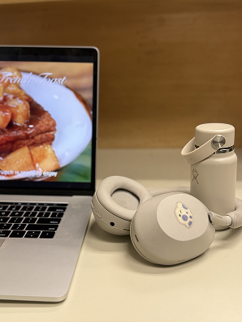

The image below is about things that calm my classmate Vyvyan down when she is stressed. This image depicts how to calm down she likes listening to music and watching youtube. I think the most interesting aspect of this image is the way that her computer is open and she is looking at something and it is hard at first glance to tell what it is. When you look closer at it and zoom in you can see it says french toast. Then you can start to decipher the shapes as being french toast with some sort of fruit on it. This evokes calming emotions. The most obvious part of this is that it depicts things that are calming like the headphones and water bottle. I think a mysterious part of the image is what is on the computer screen. I also think a mysterious part is the location where the photo is taken because you can't really tell where it is. Vyvyan was talking about retaking the photo to make it more interesting and I think that would be a good idea. Maybe she could play around with the location that the photo is being taken to make it feel more calming or have more tension to see how the narrative of the pictures would change.

Vyvyan Tran, 2026
I think the image below of my ear with my piercings is the most interesting. I think the piercings I have on this ear have the most interesting stories associated with them that people wouldn’t know by just looking at the photo. I also am wearing Indian jewelry in one of my piercings called jhumkis or jhumkas that not everyone is probably familiar with. This photo helps document my piercings and helps illustrate the point that I have about just getting the piercings that I want. This collection tells people about the way I express myself and also how I embrace my Indian heritage through wearing Indian jewelry. I think that I should retake the images of my ears to have more consistent lighting to bring more unity to my design. I also usually wear two sets of jhumkis in my ears but since the other pair I usually wear are bigger it was hard to photograph. Maybe I will have a friend help me take the photos and wear both sets of my jhumkis.
After reading Michael Gonchar’s “10 Intriguing Photographs to Teach Close Reading and Visual Thinking Skills”, I gained more insight on visual thinking. I think it is so interesting how a photo can be used to communicate so much and really tell a story. In addition, I think that it is cool that some teachers are encouraging their students to develop their visual thinking skills because I think it is important to teach students to look at the things, think about what is happening, and have empathy.
I think that using intriguing visuals to stimulate visual thinking in users is extremely effective to make websites more interesting and meaningful. I feel like websites can often be boring so it can be very impactful to see designers do creative things with visuals, especially when they are informative, helpful, and functional.
A website that I think does a really good job at using interactive visuals is In Common With which is a company that sells light fixtures. I saw someone talk about this website on TikTok and I thought it was really cool. When you look at their products the default is viewing the light fixtures in daytime lighting when the light doesn’t need to be on. However, they also have a toggle button titled “light” and when you select it, the lighting changes to look like it is nighttime and the light fixture is on. This allows users to see how the light would look on and off and in different times of day. I feel like this is such a creative and simple UI feature that implements visuals that not only look cool but truly help users understand the product better and how it may look in their space.
The article “Best Practices for Modals / Overlays / Dialog Windows” by Naema Baskanderi helped me learn more about using modals, overlays and dialog windows and how I can implement them into my designs in the best way for users. I agree with Baskanderi’s claim that modals are annoying. I often just click away and don’t read the information on the modal. I liked how Baskanderi talked about when to use modals and when to go with another option. Furthermore, I liked how Baskanderi included information on how to make modals accessible and brought up how Accessible Rich Internet Application (ARIA) tags are a useful tool to do that.
The biggest takeaway that I got from this article was that even though modals can be helpful, they tend to be annoying and designers should keep that in mind when implementing overlays into designs so that the user experience is not negatively impacted. I enjoyed this article and will apply the tips that Baskanderi provides going forward in my designs!
After reading “Best Practices for Form Design” by Salim Ansari, I gained more insights on how to design forms so users can have the best experience possible. As someone who hates filling out forms, the tips Ansari gave make sense and would make my experience filling out forms better. Something that he brought up that stood out to me was that no one wants to fill out a really long form so condensing information and all together taking out information is better. This hits home for me because I have often stopped filling out or put them off because they were too long. I also liked how Ansari brought up ways to make forms accessible. This is important so everyone can have a good experience completing the form and I will incorporate his tips into my designs.
I think a good example of a website that uses good form design is Calendly’s website. On the form when you are just getting started with using the platform they tell you how many more pages you have with the form, they give more information about why they are asking these questions in text that is lighter and less bold than the question, giving the form type hierarchy, and when you select your answer in either multiple choice or checkbox questions the border of the box of the answer you select changes color but also becomes bolder, making it more accessible.